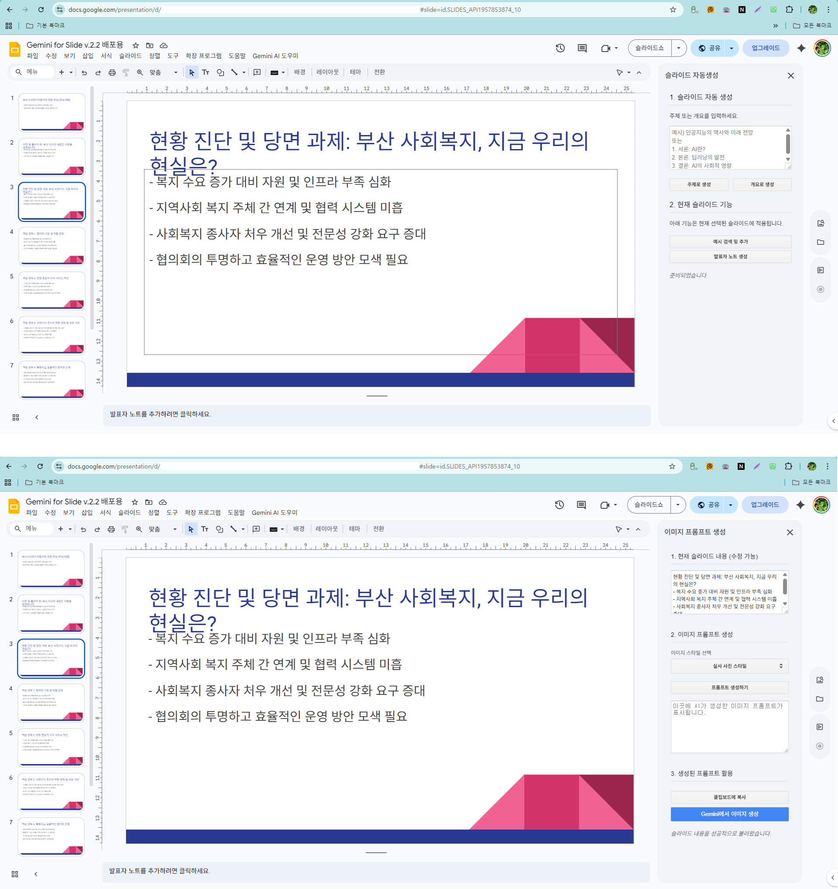

Slide에서 AI 쓰기 (Gemini AI in Slides)
주제만 입력하면 AI가 슬라이드의 골격을 구성하고, 개요에 맞춰 내용을 채워주는 **프레젠테이션 자동 제작 비서**입니다. 발표자 노트를 자동으로 생성해주고 내용에 어울리는 이미지 프롬프트까지 제안합니다.
📽️
슬라이드 자동 구성
입력된 주제나 개요를 분석하여 영역별 슬라이드를 즉시 생성합니다.
🎤
발표자 노트 & 시간 배분
슬라이드별 대본을 작성하고 예상 발표 시간을 함께 제공합니다.
🖼️
이미지 생성 지원
내용에 최적화된 고유 이미지를 만들 수 있도록 이미지 프롬프트 생성을 돕습니다.

슬라이드 구성 및 자동 생성 화면